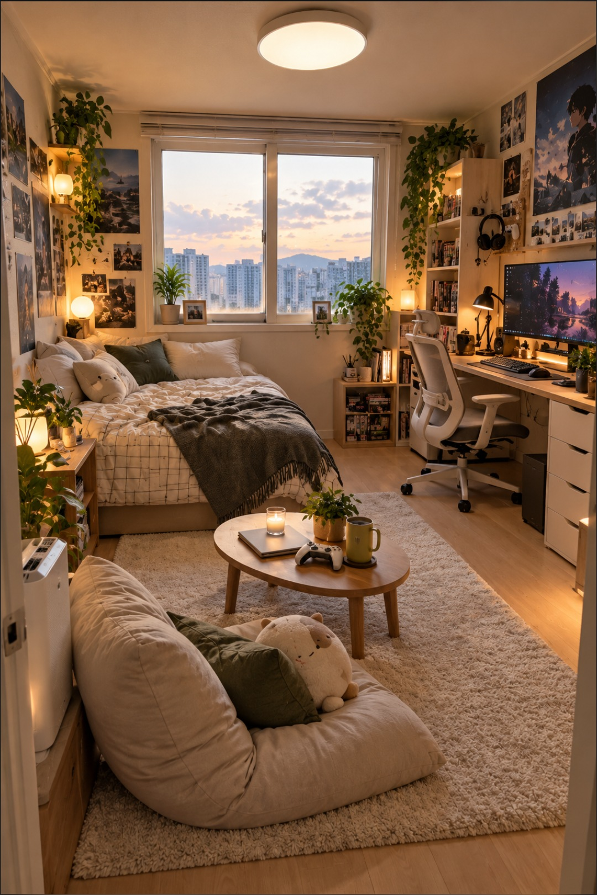
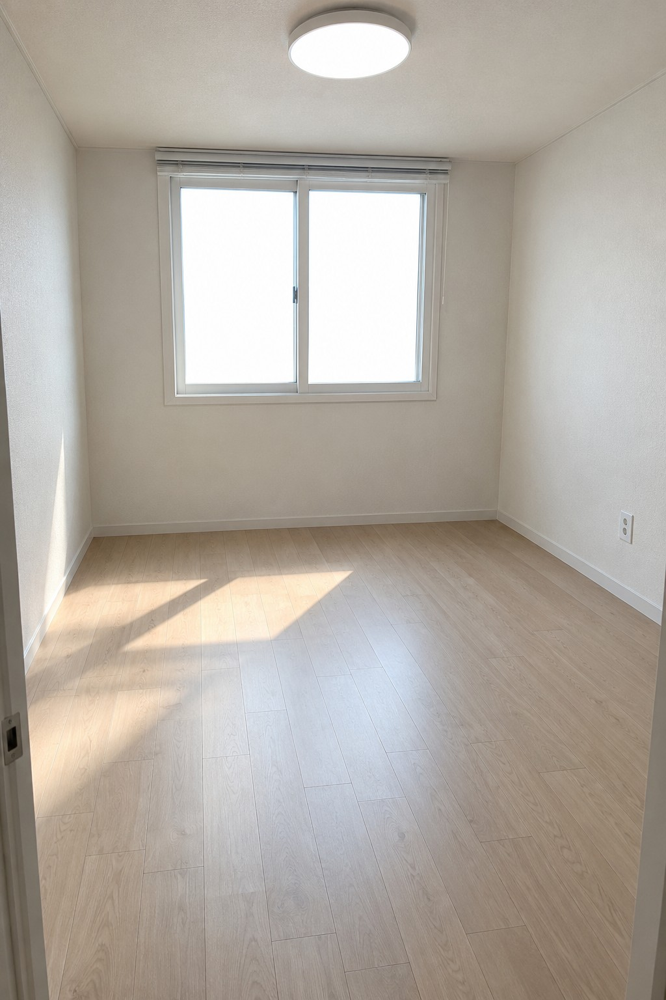
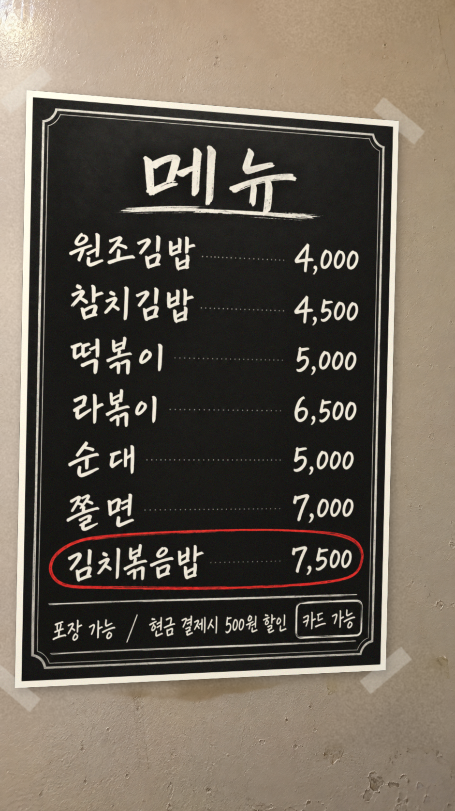
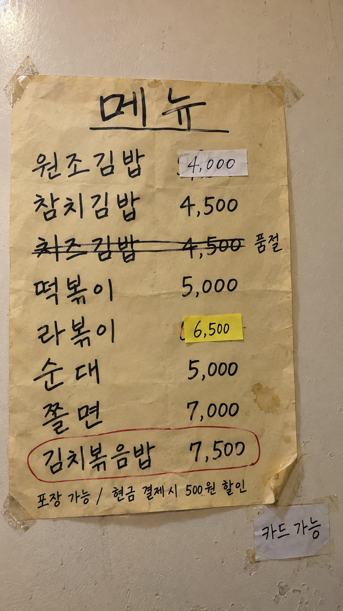
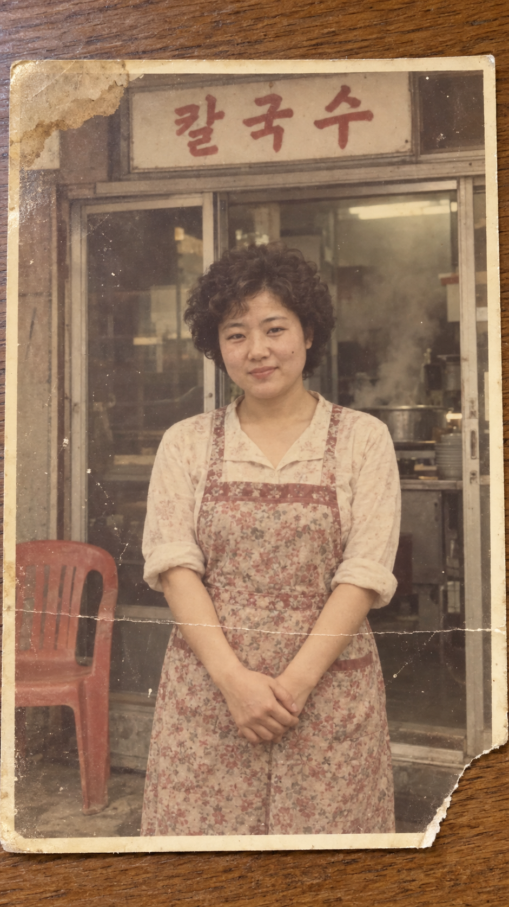

SYNK 브리핑따라 하는 AI
작은 사진을 보냈더니, 큰 사진이 왔어요

yuhobuildsAI와 회사 만들기
올리기를 맡길 때단, 내가 「승인」이라고하기 전엔 올리지 마.
글을 맡길 때단, 모르는 숫자 · 후기 · 이름은지어내지 말고 [빈칸]으로 남겨 줘.
정리를 맡길 때단, 아무것도 지우지 마.「정리대기」 폴더로 옮겨.



사진 속 인물은 AI로 만든 예시예요